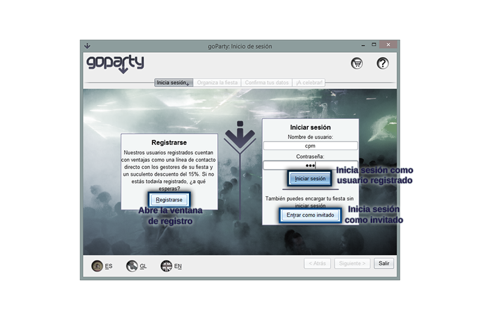
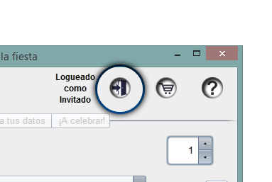
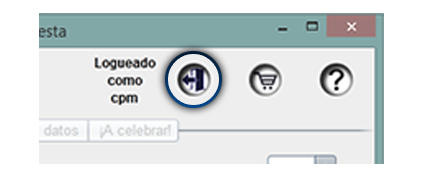

En goParty existen dos maneras de realizar el encargo de una fiesta, como usuario registrado o iniciando sesión como Invitado. Los usuarios registrados cuentan con un descuento del 15% en el precio total de la fiesta que organicen mientras que los invitados deben pagar el importe íntegro. Para poder iniciar sesión como usuario registrado primero debes registrarte.
Una vez te hayas registrado en la aplicación ya puedes iniciar sesión introduciendo en los campos indicados tu nombre de usuario y contraseña, si ambos son correctos iniciarás sesión con todos los privilegios que esto proporciona y obtendrás acceso a la selección de artículos para tu fiesta.
Si no quieres registrarte y prefieres realizar el trámite como usuario invitado puedes hacerlo inmediatamente con el botón Entrar como invitado que también te dirigirá a la pestaña de selección de artículos, no te preocupes si luego cambias de idea y decides iniciar sesión como usuario registrado pues siempre tendrás disponible el siguiente botón situado en la parte superior de la aplicación que te permitirá regresar a esta ventana e iniciar sesión apropiadamente sin perder progreso en la planificación de tu fiesta.

Si en algún momento cambias de idea y decides que no quieres hacer el pedido como usuario registrado o quieres cambiar a otra cuenta registrada, durante todo el proceso mientras hayas iniciado sesión como usuario registrado tendrás disponible en la parte superior de la aplicación el siguiente botón que te permitirá cerrar sesión y cambiar a una sesión de invitado sin perder el progreso que llevas hecho en la planificación de tu fiesta.
